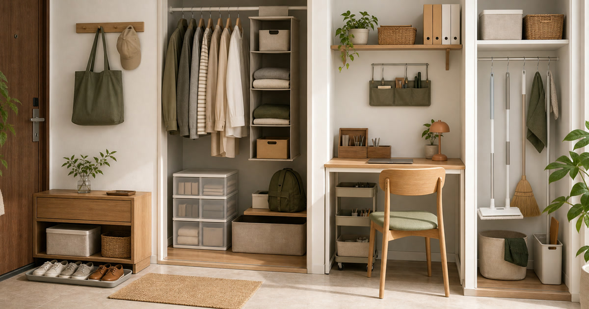

小宅收納不是買更多盒子：玄關、衣櫃、書桌與清潔工具配置
小宅收納的核心不是買更多盒子，而是先替物品安排停靠點，再看玄關、衣櫃、書桌與清潔工具如何接上動線。

小宅收納最常見的誤會，是以為多買盒子就會變整齊。實際上，盒子只會把問題延後：東西沒有固定停靠點，明天還是會回到桌面、椅背和地上。本文從回家後的第一個動作開始，把玄關、衣櫃、書桌與清潔工具區串成一條日常動線。
玄關是小宅的第一個壓力測試
包、鞋、鑰匙、口罩、信件和外套都會在玄關交會。若沒有托盤、鞋位和暫放區，小宅很快會從門口開始失控。
完美主義、真蓁嚴選清潔生活館與壹品輕奢家居館可分別放在收納家具、清潔工具與小宅家居中比較；承重、尺寸與材質仍要看商品頁。
Elite Fashion 編輯團隊的具體判斷是：先替物品安排停靠點，再買盒子；收納不是把東西藏起來。 這讓 完美主義 官方直營、真蓁嚴選清潔生活館-專賣平板拖把、掃把、掃除用品 與其他選項能被放回同一個生活問題裡比較，而不是只看單一商品照片。
下單前仍要回商品頁確認規格、尺寸、材質、活動、庫存與配送；若資訊不足，先暫緩，比把不確定的物品帶回家更成熟。
- 先確認使用位置與拿取頻率。
- 再看保存、清潔、線材或收納條件。
- 最後才比較品牌、活動與預算。
衣櫃不要先買盒子，先分穿著頻率
常穿的衣服要拿得到，季節備品才適合收進盒子。若先買一排收納盒，反而可能把每天要穿的東西藏起來。
SUSS Living生活良品與 Awayuki淡雪 日本製精品可作為小物與生活用品補充參考，但不保證適合所有坪數或衣櫃深度。
Elite Fashion 編輯團隊的具體判斷是：先替物品安排停靠點，再買盒子；收納不是把東西藏起來。 這讓 完美主義 官方直營、真蓁嚴選清潔生活館-專賣平板拖把、掃把、掃除用品 與其他選項能被放回同一個生活問題裡比較，而不是只看單一商品照片。
下單前仍要回商品頁確認規格、尺寸、材質、活動、庫存與配送；若資訊不足，先暫緩，比把不確定的物品帶回家更成熟。
- 先確認使用位置與拿取頻率。
- 再看保存、清潔、線材或收納條件。
- 最後才比較品牌、活動與預算。
Elite 嚴選
書桌收納的標準是能否重新開始工作
桌面不必空無一物，但要能在三十秒內回到可工作的狀態。文件、筆、充電器、耳機與水杯都要有固定位置。
灰調 生活家飾選品可放在燈飾、花器或桌面氛圍中參考；照明與香氛不應取代真正的桌面整理。
Elite Fashion 編輯團隊的具體判斷是：先替物品安排停靠點，再買盒子；收納不是把東西藏起來。 這讓 完美主義 官方直營、真蓁嚴選清潔生活館-專賣平板拖把、掃把、掃除用品 與其他選項能被放回同一個生活問題裡比較，而不是只看單一商品照片。
下單前仍要回商品頁確認規格、尺寸、材質、活動、庫存與配送；若資訊不足，先暫緩，比把不確定的物品帶回家更成熟。
- 先確認使用位置與拿取頻率。
- 再看保存、清潔、線材或收納條件。
- 最後才比較品牌、活動與預算。
清潔工具要靠近髒污發生處
掃把、拖把、抹布和替換耗材若藏太遠，清潔就會變成大型任務。把工具放在髒污最常發生的附近，才有機會真的使用。
購買前先看收納高度、晾乾方式、替換耗材與可否不釘牆，不要只看商品照是否整齊。
Elite Fashion 編輯團隊的具體判斷是：先替物品安排停靠點，再買盒子；收納不是把東西藏起來。 這讓 完美主義 官方直營、真蓁嚴選清潔生活館-專賣平板拖把、掃把、掃除用品 與其他選項能被放回同一個生活問題裡比較，而不是只看單一商品照片。
下單前仍要回商品頁確認規格、尺寸、材質、活動、庫存與配送；若資訊不足，先暫緩，比把不確定的物品帶回家更成熟。
- 先確認使用位置與拿取頻率。
- 再看保存、清潔、線材或收納條件。
- 最後才比較品牌、活動與預算。
台灣小宅要預留濕氣與通風
玄關鞋位、浴室旁清潔工具和衣櫃深處都容易遇到濕氣。收納容器若不通風，反而可能讓日常維護變麻煩。
本文不宣稱任何商品具備防潮、除味或承重效果；相關資訊請以商品頁與官方標示為準。
Elite Fashion 編輯團隊的具體判斷是：先替物品安排停靠點，再買盒子；收納不是把東西藏起來。 這讓 完美主義 官方直營、真蓁嚴選清潔生活館-專賣平板拖把、掃把、掃除用品 與其他選項能被放回同一個生活問題裡比較，而不是只看單一商品照片。
下單前仍要回商品頁確認規格、尺寸、材質、活動、庫存與配送；若資訊不足，先暫緩，比把不確定的物品帶回家更成熟。
- 先確認使用位置與拿取頻率。
- 再看保存、清潔、線材或收納條件。
- 最後才比較品牌、活動與預算。
下單前畫一條回家路線
從門口到放包、脫鞋、掛外套、洗手、坐下工作，把每一步畫出來。買收納用品前先問：這件東西能讓哪一步少一次彎腰、少一次尋找或少一次堆放？
價格、尺寸、材質、活動、庫存與配送請以下單前商品頁公告為準。
Elite Fashion 編輯團隊的具體判斷是：先替物品安排停靠點，再買盒子；收納不是把東西藏起來。 這讓 完美主義 官方直營、真蓁嚴選清潔生活館-專賣平板拖把、掃把、掃除用品 與其他選項能被放回同一個生活問題裡比較，而不是只看單一商品照片。
下單前仍要回商品頁確認規格、尺寸、材質、活動、庫存與配送；若資訊不足，先暫緩，比把不確定的物品帶回家更成熟。
- 先確認使用位置與拿取頻率。
- 再看保存、清潔、線材或收納條件。
- 最後才比較品牌、活動與預算。
同主題品牌參考
FAQ
小宅收納第一步該買什麼？
第一步不是購買，而是畫出回家後的動線，確認包、鞋、鑰匙、衣物與清潔工具的停靠點。
收納盒越多越好嗎？
不一定。收納盒若沒有分類和拿取邏輯，只會把混亂藏起來。
清潔工具要怎麼收？
放在髒污最常發生且容易晾乾的位置，並確認高度、替換耗材與收納方式。
下一步建議
小宅收納的核心是動線與使用頻率，不是容器數量。 先用本文順序縮小範圍，再回商品頁確認規格、價格、活動與庫存。
重要警語
本文含品牌／商品導購連結；商品資訊、價格、規格、活動與庫存請以商品頁公告為準。不宣稱承重、防潮或適合所有坪數。
本文含品牌／商品導購連結；若你透過部分商品連結前往選購，Elite Fashion 可能取得合作收益。本文仍以編輯判斷與使用情境整理為主，價格、規格、活動與庫存請以商品頁公告為準。